釣行日誌 ＮＺ編 「一期一会の旅：A Sentimental Journey」
ディーン君の思い出の渚にて
11/25(SUN)-5
まだ潮位は高いようで、楽々と支流から本流へ出て、そして河口へとボートは向かう。
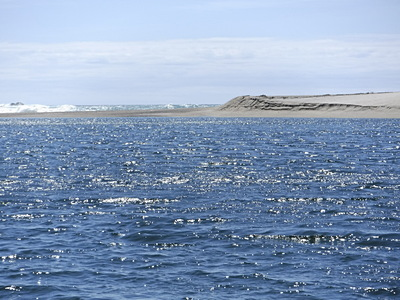
もうすぐ河口という場所で砂浜のある右岸側にボートを寄せ、ロープで立木に係留した。近くの潮だまりにはカモメが２羽くつろいでいた。
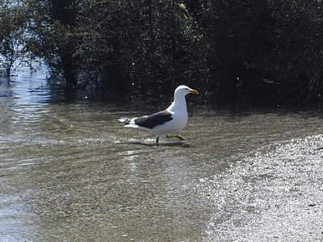
ディーンは三脚とビデオカメラ、僕は大きなクーラーボックスを担ぎ、ヨタヨタと浜辺に向けて歩き出す。砂に足を取られてなかなか進まない。昨日今日と裸足でウェーダーを履いていたら、ネオプレンと言えどもしっかり靴擦れが起こり、右の踵の側面がチリチリ痛んだ。しかし、我慢して歩き続けて海岸へ出てみると、少々荒れ気味のタスマン海は、翡翠色を魅せて実に美しかった。
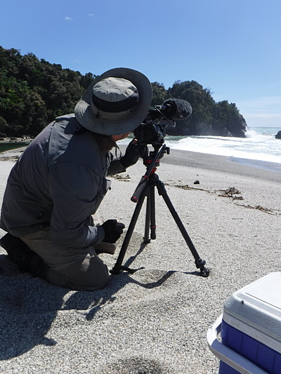
ディーンは西海岸の辺境の風景撮影を始め、僕はランチの残りのオレンジを取り出してかじり付いた。
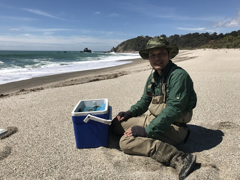
「小さい頃、親父とお袋に連れられて、よくこの海岸でキャンプをしたものさ。」
彼が遠い昔を想い出し、懐かしそうに語り出す。
「こんな風景や、あんなふうに鱒が釣れる川を子供達に残していってやりたいんだ。」
今や２児の父親となった、かつての少年は静かに言った。
帰途、本流沿いには何ヶ所もホワイトベイト漁師の建てた大がかりな可倒式スクリーンネットがあった。
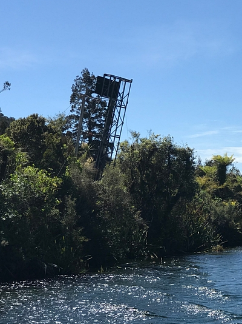
ニュージーランドでは最近、自然保護団体や政党から、在来魚５種の稚魚の総称であるホワイトベイト保護の見地から、商業的漁獲の全面的禁止を求める法案が出され、大きな論争を呼んでいるのであった。オークランドあたりでは、ホワイトベイト１kgが 130NZD（約10,000円）ほどの値段で取引されているという。毎年９月から１１月中旬の漁期には、漁師達が小屋に泊まり込み、遡上してくるホワイトベイトを本流に張り出したスクリーンネットで捕るのだ。そのおこぼれたちが遡上して来るのを鱒が狙い、またその鱒をアザラシが喰らう！ といった現状である。
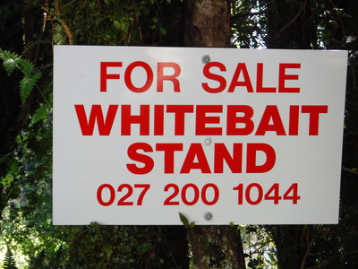
支流に着いて、狭い流れにボートを入れたディーンは、僕にボートをその場に保持しておくように頼んだ。彼がまたも器用にトラックをバックで動かしてトレーラーを水中に入れ、ウインチでボートを載せて引き上げた。
荷物を積み込み、ボートを牽きながらゆっくりと未舗装の林道を進んで行くと、リュックを背負った若いカップルがこちらに歩いてきた。
「やぁ！ 君たちどこへ行くの？」
「これからペンギンを見に行くところなんだ。」
「ああ、それじゃ道が違うよ！ ここからじゃえらい遠回りになる。良かったら乗りな、案内してあげるから。」
親切で気の良いディーンがそう言ったので、僕は慌てて後部座席のスペアロッドや荷物を整理して、座席を空けた。乗り込んできたカップルはアメリカから来たそうで、少し先にレンタカーが停めてあるとのことなので、そこまで乗せていき、その先はディーンがペンギンウォッチングが出来る浜辺へ出られる散策道の入り口までトヨタで先導してあげた。
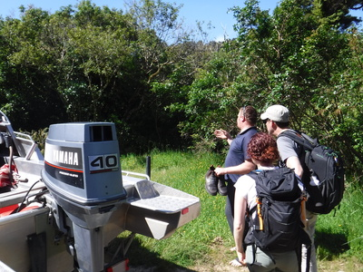
「けっしてウォーキングトラック（散策道）」を外れて森の中に入らないようにね！」
とアドバイスしてディーンは彼らを送り出した。
時刻は４時半。さぁホキティカに帰ろう。いったんロッジに寄って大荷物をトラックに積み込み、２人分の濡れたウェーダーはボートの風防に引っかけて道中走りながら乾かして行くことにした。
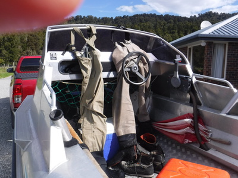
今度はジェームズさん宅に寄って、ディーンが預けておいたドローンなど他の撮影機材を積み込む。現れたジェームズさんとディーンがまた世間話を始める。Coasters（NZ南島西海岸の住民たちの愛称） は本当に話し好きだ。
人懐こい黒い飼い犬が寄ってきたので、ポリポリと頭を長いこと掻いてやっていると、ハッハッと舌を出して喜んでいる。
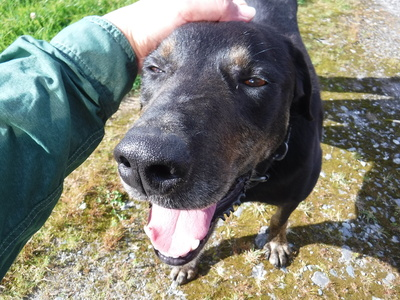
振り返ったジェームズさんが笑いながら、
「そいつは君のスーツケースに収まるかい？」
と言った。何のことか判らずに僕がキョトンとしていると、彼とディーンは僕の顔を見てまた笑った。
ヘリポートを後にして車に乗り込み、走り出した後でディーンに、さっきの話はどういう意味だったの？と訊ねると、
「あはは。あれはな、そんなにあの黒犬が気に入ったんなら日本に連れて帰っても良いよっていうジョークだったのさ！」
と笑いながら答えてくれた。うーん、英語のジョークは難しい。（笑） 髭の似合うジェームズさんはちょっと見では年齢不詳だが、ディーンが言うにヘリ操縦の腕はピカイチらしい。山頂にある岩場のわずかな平坦部にヘリの片方のスキッド（着陸用の脚）だけを着けてホバリングし、その間にディーンが撮影機材を持って降りるなんてことは朝飯前らしい。
「オレは体が重いから静かにヘリから降りないと、バランスを失って危ないんだよ。」
そう言ってディーンは笑った。
1997年の初めてのNZ釣行の際、ガイドしてくれたビル・アリソンさんは、
「ヘリのパイロットは、歳をとっていればそれだけで腕が良いという証拠なんだ。長年事故に遭わずに生き残ったってことだからな。」
と言っていたことを思い出した。ディーンの話では、1998年の釣行でブリントさんや釣友の川本君と共に、サウス・ウェストランドのハーストから乗せてもらった時のモーガンさんという名のパイロットは、若くして事故で亡くなったとのことだった。おぼろげではあったが、ハンサムだった彼の冥福を祈った。
前に頼んでおいたとおり、ディーンがフォックス氷河近くの売店に寄ってくれたので、大勢の中国人観光客の隙間をぬって絵葉書を大量に買い込む。一連のウェストコーストの見事な風景が撮されていて、クライストチャーチやオークランドでは買えないのだ。
再びSH6を北へと走り出す。途中、前方を走るミルク運搬トラックに追い付いた。時速80kmくらいで走っている。
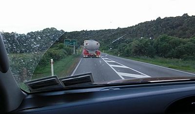
「ゴウ、あの手のトラックは “タンカー” と呼ばれているんだけど、２連トレーラーになっていて車長がとても長いから、よほど長い直線区間でない限り追い越しはやめておけよ。」
と、ディーンが有益なアドバイスをしてくれた。
長いドライブの後、日暮れ間近の午後８時半頃にホキティカのブリントさん宅にトラックは着いた。
「ところでディーン、今夜のアコモデーションはどこなの？」
「ここだよ！」
「えっ、また今回も泊めてくれるの！？」
トロレイ夫妻のご高恩に感謝しつつ、重い荷物を降ろして玄関へ運ぶ。よく釣れたみたいだなぁとブリントさんが出迎えてくれた。タスマン海に沈む夕日が最後に見せるというグリーン・フラッシュを皆で見ながらさっそくディナーとなった。
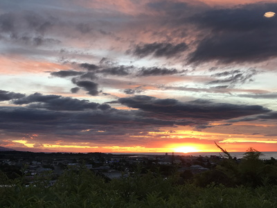
夫妻が腕を奮って作ってくれた今夜のご馳走は、白身魚のフライ２種、茹でたポテトとグリーンピース、レタス・ゆで卵・トマトのサラダなどである。
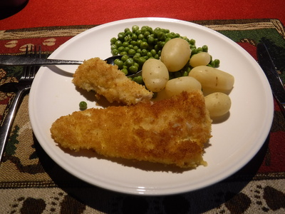
皆さんそろってジョーク大好きなので、料理を味わいながら、いろんなウィット溢れる話を楽しんだ。曰く....
1) 沿岸警備隊に緊急無線が入った。
「I am sinking! I am sinking! Help me!」
「船が沈む！沈んでいく！ 助けてくれ！」
当直官が応えた。
「What are you thinking?」
2) カナリア諸島は、その名に反して実際にはカナリアは居ない。
バージン諸島には、実際には.......カナリアは居ない。
注）カナリアという鳥は、本当にカナリア諸島原産のようです。ウィキペディアより。
ご馳走をたくさん頂いた後で、ディーンが撮影して来たヘリの夜間飛行や鱒のボイル、突然のアザラシの襲来など一連のビデオ画像を見て、ご両親は揃って感動していた。
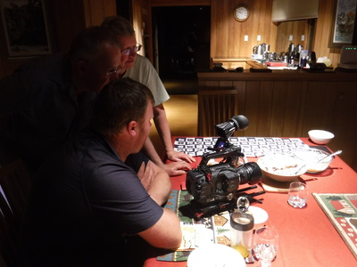
いろいろな話で盛り上がっていると、ブリントさんが奥から１冊の本を取り出してきて、僕にプレゼントしてくれると言った。
「THE TROUT'S TALE : Chris Newton著」
という本で、ブラウントラウトがいかにして全世界に広まっていったかを詳細に調査研究し、興味深い物語にしたてたストーリーらしい。目次を見ると、いかにも面白そうな項目が並んでいたのでありがたく頂戴する。
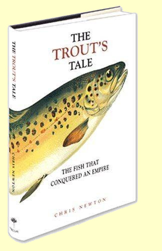
夜も更けたので、夫妻が用意してくださった客間に運び入れた大荷物の中から常服薬を探し出し、いつもどおり飲んでからシャワーを浴び、大きなベッドにどったりと倒れ込んだ。素晴らしい結果となったサウス・ウェストランド釣行が終わった。明日はオークランドだ。
釣行日誌ＮＺ編 目次へ
サイトマップ
ホームへ
お問い合わせ